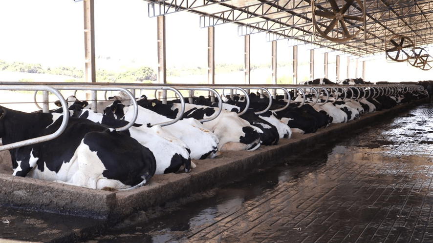
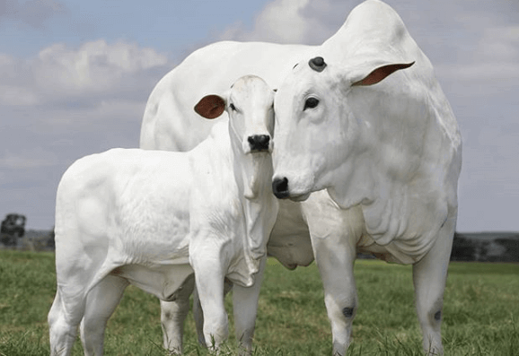
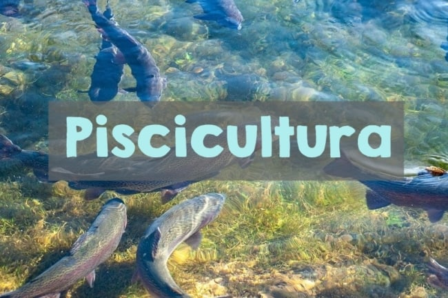

Pecuária
A pecuária é uma atividade fundamental para o desenvolvimento econômico e social, sendo responsável pela criação de animais destinados à produção de alimentos e outros produtos.
A SilveAgro oferece assistência técnica especializada, buscando melhorar a produtividade, o bem-estar animal e a sustentabilidade das propriedades rurais.
Nossas áreas de atuação
Conheça as principais atividades pecuárias que recebem assistência técnica da SilveAgro.

Bovinocultura
Orientação técnica na criação de bovinos, manejo alimentar, reprodução e saúde animal.

Piscicultura
Orientação na criação de peixes, qualidade da água, alimentação e produção.
Assistência Técnica Especializada
A SilveAgro trabalha para oferecer soluções técnicas que atendam às necessidades de cada produtor rural, contribuindo para uma pecuária mais eficiente, produtiva e sustentável.